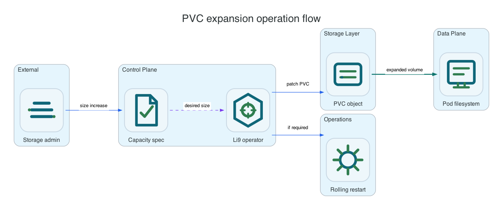

Reference / Platform
PVC and capacity operations.
PVC capacity is part of the storage lifecycle, not just a StatefulSet template field. The owner must update PVCs, confirm filesystem expansion, and restart/remount workloads where required.
Deletion Policy

| Policy | Expected Behavior | Use When |
|---|---|---|
Retain | Runtime resources may be removed, but persistent data is kept for recovery or manual cleanup. | Default production behavior. |
Delete | Managed data PVCs are deleted and data removal is intended. | Ephemeral environments or explicit destructive cleanup. |
Expansion Flow
- Confirm the StorageClass allows expansion.
- Increase the requested size in the platform control surface.
- Confirm the PVC object capacity changes.
- Restart or remount workloads that need filesystem resize.
- Verify runtime status and object write/read behavior.
oc get storageclass ocs-storagecluster-ceph-rbd -o jsonpath='{.allowVolumeExpansion}{"
"}'
oc -n li9-s3-runtime patch s3storage li9-s3 --type=merge -p '{"spec":{"storage":{"data":{"pvc":{"size":"40Gi"}}}}}'
oc -n li9-s3-runtime get pvc -w
oc -n li9-s3-runtime get s3storage li9-s3 -o jsonpath='{.status.conditions}' | python3 -m json.toolNative Package Capacity
| Platform | Capacity Change | Verification |
|---|---|---|
| Linux | Extend the block device/filesystem or mount a larger volume at the configured data/metadata path. | df -h, findmnt, li9-s3ctl health. |
| Windows | Extend the volume in Windows storage management or attach a larger volume at the configured path. | Get-Volume, Get-Disk, li9-s3ctl.exe health. |
Risks
- Changing only a StatefulSet volume template does not resize existing PVCs.
- Some filesystems need pod restart or remount before the expanded size is visible.
- Deleting PVCs with
Deletepolicy is destructive and is treated as data removal.